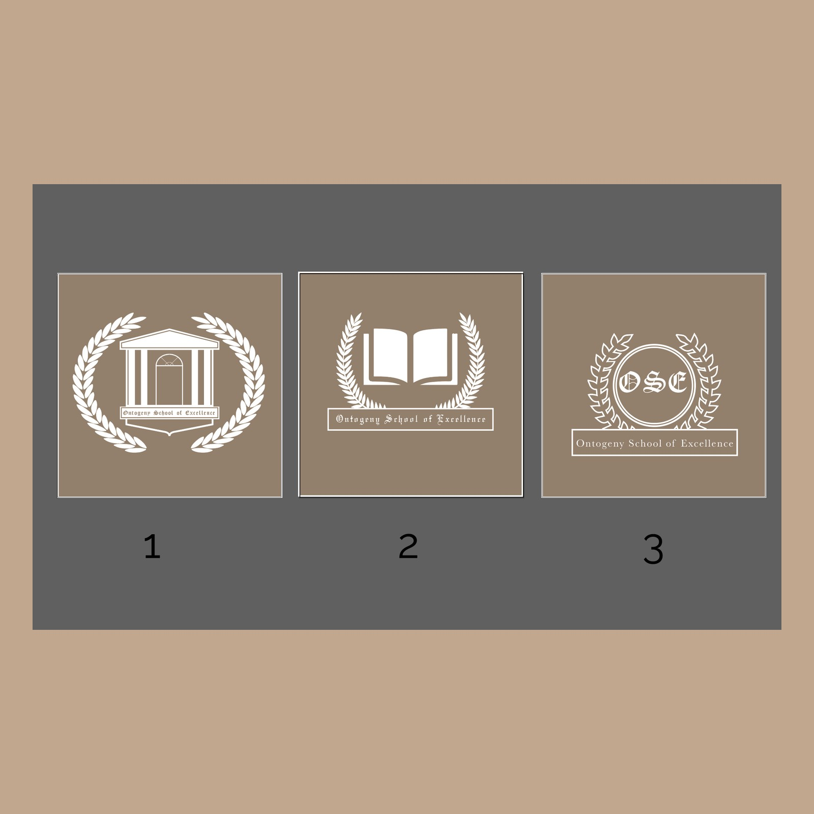
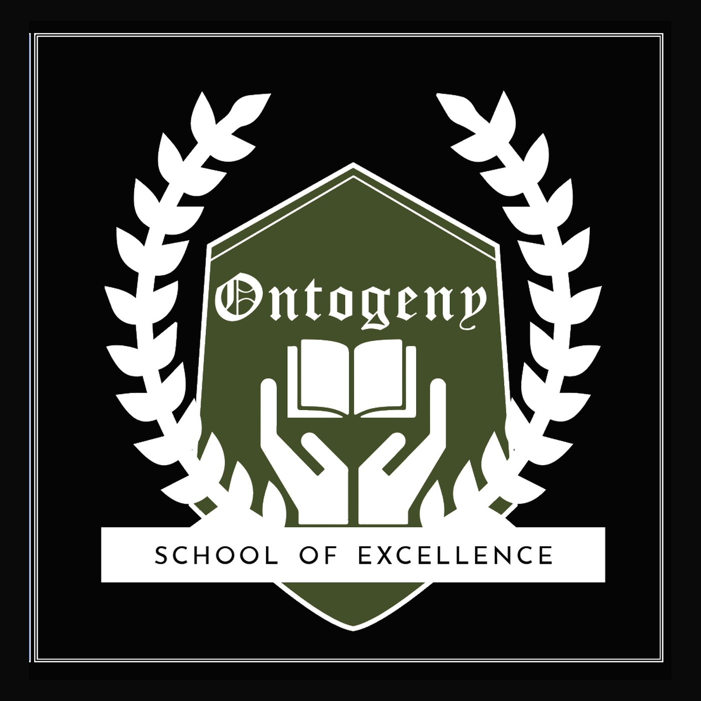
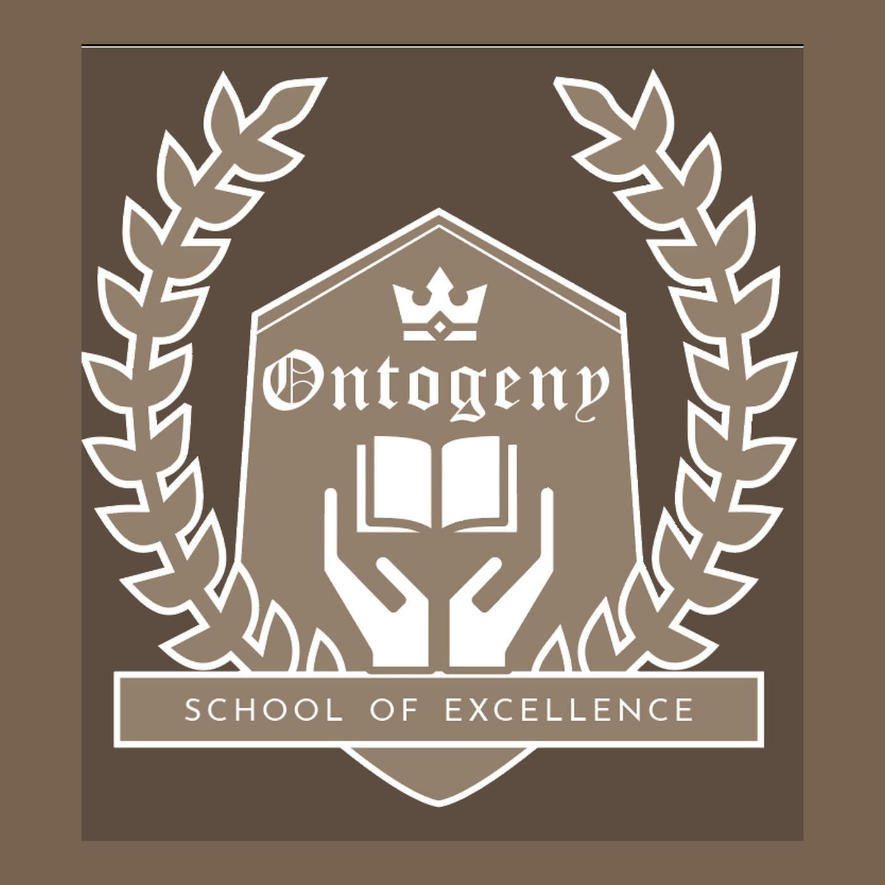

A heraldic crest for a school. The mark holds an open book in two cupped hands inside an academic shield, rings it with laurel and tops it with a crown — knowledge nurtured, achievement earned. It was drawn to live in green, black, reversed white and a warm sepia, so a single emblem could carry a blazer badge, a gate sign and a certificate alike.
Ontogeny is the development of a living thing from its earliest form — a fitting idea for a school. The crest makes it literal: an open book, the oldest symbol of learning, held and cradled in two hands rather than simply displayed. Around it sits the laurel of achievement; above it, a crown of excellence.
It is an unapologetically classical, heraldic mark — built to read as established and trustworthy at the scale of a badge, and to survive a child copying it onto an exercise book.



A temple, a book, a monogram.
The first round explored three ways to picture a school. One leaned on classical columns — the temple of learning. One put the open book at the centre. One reduced the name to a tight "OSE" monogram. The book won, then grew: lifted into a pair of cupped hands so the idea shifted from showing knowledge to holding it, and wrapped in the full heraldic vocabulary of shield, laurel and crown.
The same emblem was finished in four tones — a forest green for the primary mark, a deep black for formality, a reversed white for dark grounds, and a warm sepia for a heritage feel. Presenting them side by side let the school choose a character, not just a colour, and gave every future touchpoint a ready answer before a single sign was made.